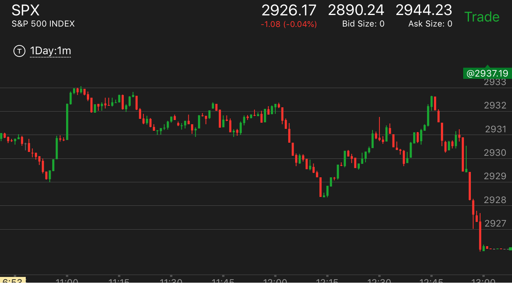
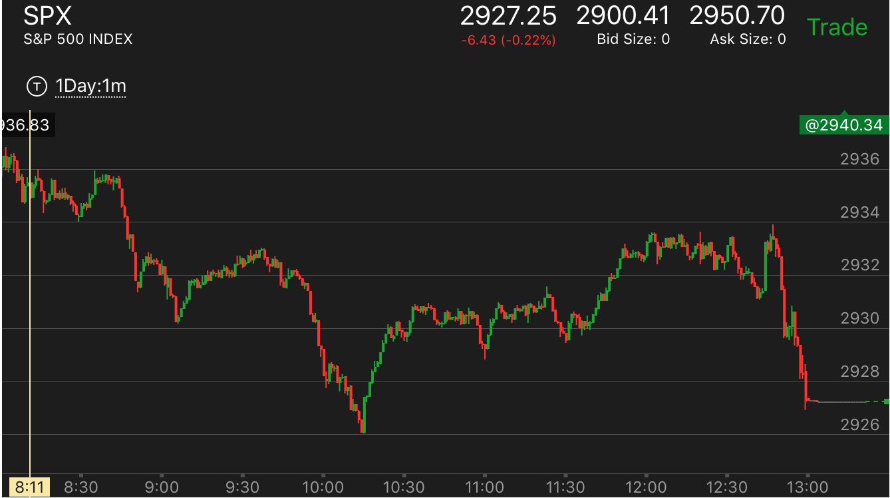

确定性的预设点位置
- 大部分走势，顶部或者底部都是平的，有足够的时间来操作。但是有时候，在底部或者顶部只有一分钟或者一瞬间。这时就要预先做好准备
- 大盘处于跌势，但是下跌的形状不好，出现了快速下跌，走平。但是没有到底。缓慢反弹。这时可以断定，它一定会超过下跌的开始点，然后立刻下跌。升势也一样
- 大盘大幅连续下跌，然后反弹，幅度很小，远远低于真空点，就开始返回低位。这时可以在低点放要给单子。它会回到低位后，立刻反弹。
跌势中，跌的形状导致反弹，会超过下跌位置后，立刻下跌
跌势中，出现了长时间缓慢上涨，然后突然一个冲高。这个冲高经常只有一分钟，创新高后，立刻拉回下跌
一开始就下跌很快，然后缓慢走低，再次下跌，立刻反弹
TOP

图示：12：00快速下跌，缓慢下跌后，再次下跌速度加速。然后开始缓慢反弹。要看到，大盘仍然处于跌势。这个小的两段下跌不足以反转。
它会超过开始下跌点，立刻下跌。12：45可以看到它在高处停留只有一分钟，立刻下跌。
跌势中，出现了长时间缓慢上涨，然后突然一个冲高。这个冲高经常只有一分钟，创新高后，立刻拉回下跌
TOP

图示：12:40经过长时间上涨后，它出现了两段下跌后，突然一个加速，一分钟就跨越所有的跌势。这样就结束了，这个就是顶部了。它会创新高后，立刻大跌。
所以看到它加速，就可以放一个单子在新高附近。